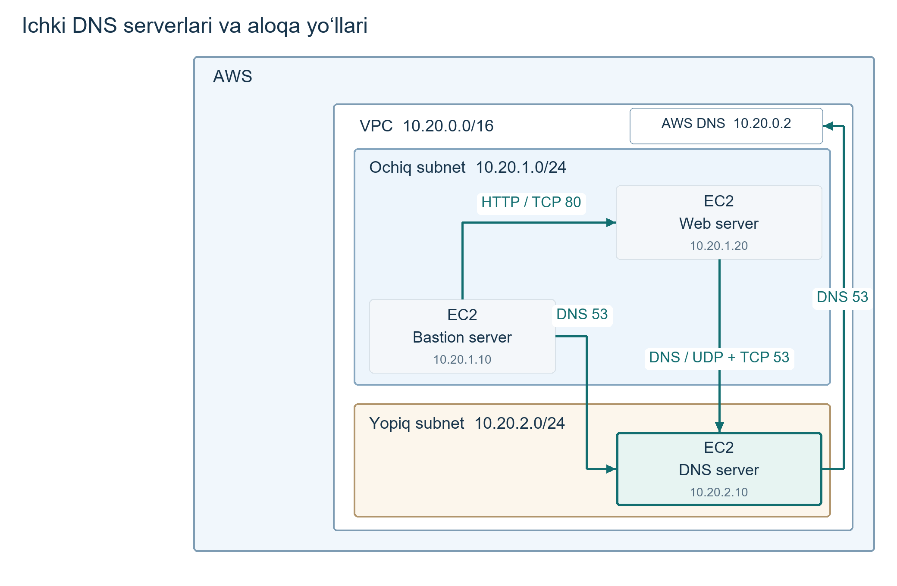

Web Infrastructure: M0-M6 mustaqil topshiriqlar
O‘qituvchi tekshiruvi uchun birinchi nashr. Talabaning qo‘llanma bo‘yicha boshidan oxirigacha o‘tishi hali tekshirilmagan.
Ruscha va o‘zbekcha matn yaponcha asl nusxa bilan bir xil qadam va shartlarga ega. Ona tili mutaxassisi tahriri hali bajarilmagan.
Mashqlar P0–P6 · Topshiriqlar M0–M6
Qo‘llanmadan foydalanish
Avval P topshirig‘ini o‘qing; kerak bo‘lsa batafsil namunani qadam-baqadam bajaring. P - batafsil qadamli mashq. M da boshqa obyekt/qiymatni mustaqil quring. Topshiriq raqami dars raqami emas; o‘z sur’atingizda ishlang. P tugashi M bajarilganini anglatmaydi.
P0 → M0 → P1 → M1 → P2 → M2 → P4 → M4 → P5 → P6 → M5 → M6
P5 uchun ham M2 DNS kerak. P4 da DB ga IP va nom orqali ulanishni mashq qiling. Ilova db.lab.test dan foydalanadi. Practice → mission almashishdan oldin P6 da setup ni tugating.
P0=1, M0=4, M1=8, M2=13, M4=9, M5=13, M6=16: jami 64 xom ball. Shaxsiy namoyish, backup/restore, qo‘shimcha disk va app dasturlash talab qilinmaydi. 25 ballga o‘tkazishni o‘qituvchi alohida qiladi. E’lon qilingan muddatgacha qayta yuborish mumkin. Turli urinish PASS lari qo‘shilmaydi; eng yuqori ball avtomatik tanlanmaydi.
Muhit va tayyorgarlik
Avval boshlang‘ich tarqatma imzosi, yangi beshta server yoki mavjud muhitga install, ichki SSH va shaxsiy ro‘yxatni tugating. Yo‘riqnoma zip dagi distribution/STUDENT.md da. Maxfiy kalitni umumiy Windows ga saqlamang; shaxsiy Academy hisobining CloudShell idan foydalaning. O‘qituvchi anonim Lab ID, fingerprint va muddatni beradi.
Umumiy private IP quyida; public IPv4 doimiy emas. AWS region us-east-1, Ubuntu24.04/amd64. RDP: labuser; SSM: ssm-user; ichki SSH: ubuntu. User nomi va server rolini adashtirmang.
| Role | Private IPv4 | Vazifa |
|---|---|---|
| bastion | 10.20.1.10 | RDP3389 / Firefox / SSH |
| web | 10.20.1.20 | HTTP80 / private8080 / loopback8000 |
| dns | 10.20.2.10 | BIND UDP/TCP53 |
| db | 10.20.2.20 | PostgreSQL5432 |
| repo | 10.20.2.30 | Oldindan saqlangan imzolangan resurslar HTTP80 |
P0 va M0 da Session Manager’ni EC2 ro‘yxatidan oching. Keyingi qadam CloudShell orqali ulanishni so‘rasa, u yerda aws ssm start-session --target i-server-ID ni bajaring. Har ikkala holatda serverda ssm-user sifatida ishlaysiz.
Nano: faylni ochish → matn yozish → Ctrl+O → Enter bilan saqlash → Ctrl+X bilan chiqish. Sozlama bloki shell buyrug‘i emas. Psql ichida prompt o‘zgaradi; SQL/\password shu yerga yoziladi, \q Ubuntu ga qaytaradi. Xatodan keyin natijani tekshirmay davom etmang.
Raqamli izohlar shu qadamdagi tartib va maqsadni bildiradi. # shell, -- psql ichidagi izohdir. Izohni o‘zgartirish shart emas. Ulanish, editor va parol kiritish tugashini kutib, bittadan bajaring. Qatorga bo‘lingan buyruq bitta buyruq bo‘lib qoladi.
Qadamlarni qanday o‘qish kerak
Har P da topshiriq, tushuntirish, qadamlar va savollar bor. Butun bo‘limni birdan joylamang: har command ni alohida bajarib natijani o‘qing. Qator oxiridagi backslash davom etishni bildiradi: keyingi qator ham shu command ning qismidir.
Bash blokini ko‘rsatilgan muhit terminaliga kiriting. Text bloki config matni, psql ichidagi kiritish yoki natija namunasi bo‘lishi mumkin; oldingi izohni o‘qing. # bilan boshlangan izoh comment hisoblanadi. Terminaldagi $ yoki postgres=# prompt ini command ga qo‘shmang. YOUR- qiymatlarini o‘zingiznikiga almashtiring.
Tekshirish tartibi: saqlangan fayl, sintaksis, service ga qo‘llash, haqiqiy ulanish. To‘g‘ri fayl ishlayotgan service yangi sozlamani ishlatayotganini hali isbotlamaydi. HTTP response, DNS answer yoki SQL natijasini log bilan solishtiring.
Tayyor tizim va ulanish yo‘llari
| Manba | Manzil | Protocol / port | Maqsad |
|---|---|---|---|
| Windows PC | Web public IPv4 | TCP/80 | Internet Gateway orqali ochiq ro‘yxat va statik fayllarni ko‘rish. |
| Windows PC | bastion public IPv4 | TCP/3389 | Ruxsatli CIDR dan RDP bilan bastion ish stoliga kirish. |
| bastion | Web/DNS/DB/repo | TCP/22 | Boshqarish uchun ichki SSH; private key bastion ichida qoladi. |
| bastion / Web | DNS 10.20.2.10 | UDP+TCP/53 | lab.test nomlarini yechish. DNS Web sahifa mazmunini qaytarmaydi. |
| Web app | DB 10.20.2.20 | TCP/5432 | App DB role bilan SQL bajaradi. Windows dan DB ga bevosita ulanish ishlatilmaydi. |
| bastion | Web 10.20.1.20 | TCP/8080 | admin.lab.test admin oynasi; ochiq 80 portdan alohida. |
| Nginx on Web | 127.0.0.1 on Web | TCP/8000 | Shu Web ichidagi app ga uzatish; 127.0.0.1 - ayni joriy host. |
Boshlang‘ich SSM CloudShell dan EC2 ga alohida management yo‘lidir. U oddiy Web request yo‘liga qo‘shilmaydi. Jadvaldagi ichki IP va portlar shu Lab uchun, barcha Web tizimlari uchun emas.
Mustaqil topshiriqdan oldin
Talablardan qaysi serverdagi file, nom, DB yoki role o‘zgarishini ish jadvaliga yozing. P va M qiymatlarini solishtirib M obyektlarini tanlang. Tekshiruv jadvali command tartibi emas, kerakli tayyor holatni bildiradi.
Keyin har talabni qayerdan va nima bilan tekshirishni belgilang. Faylni ko‘rish joyi bilan ulanishni sinash joyi bir xil bo‘lmasligi mumkin. Ruxsatli yo‘l muvaffaqiyati va taqiqlangan yo‘l rad etilishini alohida yozing.
Brauzerda topshiriqni tanlab natija va saqlash holatini tekshiring. M5/M6 funksiyalari uchun app administratorining mavjud parolini yashirin kiriting. Baholar avtomatik saqlanadi. Tushunish savollari va qaydlar bahoga qo‘shimcha talab emas.
M0 Shaxsiy muhit va buyruqlarni bajarish joyi (4)
Tayyor holat talablari
P0 dagi ulanish tartibini qo‘llab, to‘rtta server uchun Session Manager’ni oching. EC2 ro‘yxatida kerakli serverning Instance ID sini, so‘ng Connect yonidagi strelkani va Connect with SSM Session Manager bandini bosing. Har bir serverga ssm-user sifatida ulanib, uy katalogingizda m0-connection.txt faylini yarating va jadvaldagi qiymatni bitta qatorga yozing.
| Server | EC2 dagi nomining oxiri | Fayl mazmuni |
|---|---|---|
| DB server | -db |
db |
| DNS server | -dns |
dns |
| Repo server | -repo |
repo |
| Bastion server | -bastion |
bastion |
Topshiriqlar sahifasida M0 ni tanlang. Har bir to‘g‘ri fayl uchun 1 ball beriladi. Jami 4 ball.
Ulaniladigan serverlar

Yashil strelkalar M0 da ulaniladigan to‘rtta serverga olib boradi.

EC2 dagi Instances ro‘yxati. P0 uchun nomi -web, M0 uchun -db, -dns, -repo va -bastion bilan tugaydigan qatorlarni navbat bilan tanlang.

EC2 tafsilot oynasi. Connect yonidagi o‘ng strelkadan Connect with SSM Session Manager ni tanlang. Rasmda Web server ko‘rsatilgan.
Tekshirish va yuborish
- P0 da ishlatgan topshiriqlar sahifasiga ta’lim muassasasining Google hisobi bilan kiring va o‘z Lab muhitingiz hamda M0 ni tanlang.
- Tanlangan topshiriq tekshiruvini boshlang.
- Ishlov davom etsa natijani yangilab kuting. Nechta band bajarilganini ko‘ring. Tuzatish kerak bo‘lgan bandlarni tuzatib, yana tekshiring. Natija avtomatik saqlanadi.
M1 HTTP orqali statik faylni qaytarish (8)
Tayyor holat talablari
P1 ko‘nikmasi bilan belgilangan boshqa fayl va matnni mustaqil tarqating. practice.txt ni saqlang. Fayl, service, listen, local/bastion/public HTTP va joriy so‘rov log i tekshiriladi.
Topshiriq diagrammasi

Qalin ramka asosiy obyektni bildiradi. Har qadamdagi terminalda sozlang; strelkalar ulanish yoki tekshirish yo‘nalishidir. SG ruxsatlari boshlang‘ich tarqatmada tayyor; bu topshiriqda server ichini sozlaysiz. Chapda Internet, o‘ngdagi ramka AWS VPC sidir. IGW VPC chegarasida; barcha EC2, jumladan bastion, AWS tomonida. Diagrammaga qarab talablardan sozlama qiymatlarini mustaqil tanlang.
- File: /var/www/html/mission.txt
- URL path: /mission.txt
JDU WEB-02 mission: independent HTTP delivery.
Shartlar: har tekshiruvga 1 xom ball
| check ID (o‘zgartirmang) | Shart |
|---|---|
| WEB02_NGINX_ACTIVE | Nginx ishlaydi (active). |
| WEB02_CONFIG_VALID | nginx -t sozlamani muvaffaqiyatli tekshiradi. |
| WEB02_LISTEN_80 | 80 port private IP/barcha interface da tinglaydi, faqat loopback emas. |
| WEB02_FILE | Oddiy faylda aniq matn bor, egasi root:root, ruxsat 0644. |
| WEB02_LOCAL_HTTP | Web loopback orqali HTTP 200 va aniq matn oladi. |
| WEB02_BASTION_HTTP | Bastion private IP orqali HTTP 200 va aniq matn oladi. |
| WEB02_PUBLIC_HTTP | CloudShell public IP orqali HTTP 200 va aniq matn oladi. |
| WEB02_ACCESS_LOG | Access log aynan shu tekshiruv nonce li so‘rovni saqlaydi. |
Identity/boshqaruv/repo/tarmoq/bog‘liqlik tayyorlik tekshiruvlari ball qo‘shmaydi. Old shart ishlamasa, qisman ball keyingi bosqichga tayyorlik emas.
Tekshirish va yuborish
- P0 da ishlatgan topshiriqlar sahifasiga ta’lim muassasasining Google hisobi bilan kiring va o‘z Lab muhitingiz hamda M1 ni tanlang.
- Tanlangan topshiriq tekshiruvini boshlang.
- Ishlov davom etsa natijani yangilab kuting. Nechta band bajarilganini ko‘ring. Tuzatish kerak bo‘lgan bandlarni tuzatib, yana tekshiring. Natija avtomatik saqlanadi.
M2 Ichki DNS va odatiy nom yechimi (13)
Tayyor holat talablari
Ayni lab.test zone ga oltita asosiy nomni qo‘shing. guide/practice-db qolishi mumkin. Bastion/Web odatiy resolver, nom orqali M1 HTTP, DB nomi, UDP/TCP, forwarding, NXDOMAIN, ACL va AXFR rad etilishi kerak.
Topshiriq diagrammasi

Qalin ramka asosiy obyektni bildiradi. Har qadamdagi terminalda sozlang; strelkalar ulanish yoki tekshirish yo‘nalishidir. SG ruxsatlari boshlang‘ich tarqatmada tayyor; bu topshiriqda server ichini sozlaysiz. Diagrammaga qarab talablardan sozlama qiymatlarini mustaqil tanlang.
| DNS name | A / IPv4 |
|---|---|
| admin.lab.test | 10.20.1.20 |
| bastion.lab.test | 10.20.1.10 |
| db.lab.test | 10.20.2.20 |
| dns.lab.test | 10.20.2.10 |
| repo.lab.test | 10.20.2.30 |
| web.lab.test | 10.20.1.20 |
- Joriy old shartlar: M1
Shartlar: har tekshiruvga 1 xom ball
| check ID (o‘zgartirmang) | Shart |
|---|---|
| WEB03_SERVICE | BIND/named ishlaydi (active). |
| WEB03_CONFIG_VALID | Named va lab.test zone tekshiruvlari muvaffaqiyatli. |
| WEB03_ZONE_AUTHORITY | Lab.test SOA/NS va vakolatli javob tuzilmaga mos; NS - dns.lab.test. |
| WEB03_REQUIRED_RECORDS | Profile dagi barcha A record kerakli private IP beradi; bu bitta band. |
| WEB03_UDP_RESPONSE | Bastion ham, Web ham UDP 53 orqali to‘g‘ri javob oladi. |
| WEB03_TCP_RESPONSE | Bastion ham, Web ham TCP 53 orqali to‘g‘ri javob oladi. |
| WEB03_NORMAL_RESOLVER | Bastion/Web odatiy resolver faqat BIND dan foydalanadi; hosts yoki Firefox DoH bilan almashtirilmaydi. |
| WEB03_NAMED_HTTP | Bastiondan profile nomi va belgilangan path orqali HTTP 200 hamda to‘g‘ri matn qaytadi. |
| WEB03_DB_NAME | Web odatiy resolver profile DB nomini 10.20.2.20 ga yechadi. |
| WEB03_FORWARD_ONLY | Forward only faqat 10.20.0.2 ga yo‘naltirilgan; tashqi DNS nomi yechiladi. Tashqi HTTP shart emas. |
| WEB03_NXDOMAIN | Shu ishga tushirishdagi yangi mavjud bo‘lmagan nom vakolatli NXDOMAIN oladi. |
| WEB03_CLIENT_ACL | BIND query/recursion/cache faqat localhost, bastion va Web ga ruxsat; SG ning o‘zi yetmaydi. |
| WEB03_AXFR_DENIED | Ayni tekshiruv oddiy so‘rovlari o‘tgan holda bastion/Web AXFR aniq rad etiladi; timeout yetmaydi. |
Identity/boshqaruv/repo/tarmoq/bog‘liqlik tayyorlik tekshiruvlari ball qo‘shmaydi. Old shart ishlamasa, qisman ball keyingi bosqichga tayyorlik emas.
Tekshirish va yuborish
- P0 da ishlatgan topshiriqlar sahifasiga ta’lim muassasasining Google hisobi bilan kiring va o‘z Lab muhitingiz hamda M2 ni tanlang.
- Tanlangan topshiriq tekshiruvini boshlang.
- Ishlov davom etsa natijani yangilab kuting. Nechta band bajarilganini ko‘ring. Tuzatish kerak bo‘lgan bandlarni tuzatib, yana tekshiring. Natija avtomatik saqlanadi.
M4 PostgreSQL ga autentifikatsiya bilan ulanish (9)
Tayyor holat talablari
Asosiy DB va rollarni mustaqil quring. P4.7 dagi nom bilan ulanish usulini qo‘llab, M2 dagi db.lab.test orqali Web runtime role orqali SELECT bajaring. HBA faqat Web/32 va to‘g‘ri DB/role juftiga ruxsat beradi. Mavjud parolni Web mission helper orqali practice dan alohida saqlang. App jadvallari hali kerak emas.
Topshiriq diagrammasi

Qalin ramka asosiy obyektni bildiradi. Har qadamdagi terminalda sozlang; strelkalar ulanish yoki tekshirish yo‘nalishidir. SG ruxsatlari boshlang‘ich tarqatmada tayyor; bu topshiriqda server ichini sozlaysiz. CloudShell dan DB serverga SSM orqali ulanib, sozlang. Diagrammaga qarab talablardan sozlama qiymatlarini mustaqil tanlang.
- Profile: mission
- Database: jdu_catalog
- Setup role: catalog_setup
- Runtime role: catalog_app
- Joriy old shartlar: M2
Shartlar: har tekshiruvga 1 xom ball
| check ID (o‘zgartirmang) | Shart |
|---|---|
| WEB05_CLUSTER_ACTIVE | PostgreSQL 16/main ishlaydi (active). |
| WEB05_CLUSTER_CONFIG | 16/main sozlamasi, standart data directory va OS postgres socket/peer to‘g‘ri. |
| WEB05_LISTEN_5432 | PostgreSQL 10.20.2.20:5432 da tinglaydi. |
| WEB05_DATABASE_OWNER | DB va public schema egasi tegishli setup role. |
| WEB05_ROLE_ATTRIBUTES | Runtime LOGIN; superuser/CREATEDB/CREATEROLE/REPLICATION/BYPASSRLS va huquq oshiruvchi membership yo‘q. Setup qurishda LOGIN yoki tugagach NOLOGIN. |
| WEB05_HBA_SCRAM | HBA faqat ko‘rsatilgan DB/role va Web /32 uchun SCRAM ga ruxsat beradi; keng ruxsat yo‘q. |
| WEB05_WEB_SQL | Web dan yangi autentifikatsiyali SELECT kerakli DB/user/qiymatni qaytaradi; P IP bilan, M odatiy DNS orqali. |
| WEB05_BAD_PASSWORD_DENIED | To‘g‘ri parol ishlagan ayni tekshiruvda bitta noto‘g‘ri parol aniq rad etiladi. |
| WEB05_WRONG_TARGET_DENIED | Web dan postgres role, begona DB va boshqa profile taqiqlangan; hali yaratilmagan practice DB majburiy emas. |
Identity/boshqaruv/repo/tarmoq/bog‘liqlik tayyorlik tekshiruvlari ball qo‘shmaydi. Old shart ishlamasa, qisman ball keyingi bosqichga tayyorlik emas.
Tekshirish va yuborish
- P0 da ishlatgan topshiriqlar sahifasiga ta’lim muassasasining Google hisobi bilan kiring va o‘z Lab muhitingiz hamda M4 ni tanlang.
- Tanlangan topshiriq tekshiruvini boshlang.
- Ishlov davom etsa natijani yangilab kuting. Nechta band bajarilganini ko‘ring. Tuzatish kerak bo‘lgan bandlarni tuzatib, yana tekshiring. Natija avtomatik saqlanadi.
M5 Berilgan app ni Web va DB bilan bog‘lash (13)
Tayyor holat talablari
Ayni app ni mission DB ga ulang. P5 ko‘nikmasi bilan profile=mission tanlang, app/venv ni qayta joylamang. Ilovani P6.3 dagi mashq kabi to‘xtating. Runtime yaratish va faollashtirish, so‘ng vaqtinchalik setup yaratishda P5.4-P5.5 tartibini mission profili bilan qo‘llang. Asosiy DB da migrations/seed/admin va grants ni bajaring, ikkita belgilangan yozuvni kiriting. P1/M1 ni saqlab mission ni active qoldiring.
Topshiriq diagrammasi
![M5: DNS va DB tayyor → Tayyor app ni ulash va yoqish → Amal natijasi DB va Web da。 Qalin ramka asosiy obyektni bildiradi. Har qadamdagi terminalda sozlang; strelkalar ulanish yoki tekshirish yo‘nalishidir. SG ruxsatlari boshlang‘ich tarqatmada tayyor; bu topshiriqda server ichini sozlaysiz. 8000 faqat Web ichida; 8080 bastiondan boshqarish uchun. Chapda Internet, o‘ngdagi ramka AWS VPC sidir. IGW VPC chegarasida; barcha EC2, jumladan bastion, AWS tomonida. Diagrammaga qarab talablardan sozlama qiymatlarini mustaqil tanlang.](../../../assets/uz/m5.png)
Qalin ramka asosiy obyektni bildiradi. Har qadamdagi terminalda sozlang; strelkalar ulanish yoki tekshirish yo‘nalishidir. SG ruxsatlari boshlang‘ich tarqatmada tayyor; bu topshiriqda server ichini sozlaysiz. 8000 faqat Web ichida; 8080 bastiondan boshqarish uchun. Chapda Internet, o‘ngdagi ramka AWS VPC sidir. IGW VPC chegarasida; barcha EC2, jumladan bastion, AWS tomonida. Diagrammaga qarab talablardan sozlama qiymatlarini mustaqil tanlang.
- Profile: mission
- Database: jdu_catalog
- Setup role: catalog_setup
- Runtime role: catalog_app
- Application administrator: lab_admin
| code | name | quantity | location | is_public |
|---|---|---|---|---|
| M5-PUBLIC-001 | Mission monitor | 6 | Lab cabinet C | true |
| M5-PRIVATE-001 | Mission router | 1 | Lab cabinet D | false |
- Joriy old shartlar: M2, M4
Shartlar: har tekshiruvga 1 xom ball
| check ID (o‘zgartirmang) | Shart |
|---|---|
| WEB06_ARTIFACTS | Kod va bog‘liqliklar berilgan aniq versiyaga mos. |
| WEB06_SERVICE | jdu-catalog active va enabled, catalog nomidan ishlaydi. |
| WEB06_LOOPBACK | Gunicorn faqat 127.0.0.1:8000 da tinglaydi. |
| WEB06_PROFILE_DATABASE | Faol process kerakli profile DB va runtime role dan foydalanadi. |
| WEB06_MIGRATIONS | Belgilangan migrations, 11 jadval va zarur sequence tanlangan DB da mavjud. |
| WEB06_REQUIRED_RECORDS | Ikkala majburiy yozuv profile qiymatlariga mos; boshqa to‘g‘ri yozuvlar mumkin. |
| WEB06_PUBLIC_DATA | Odatiy ochiq URL ishlayotgan DB dan to‘g‘ri yozuvlarni oladi. |
| WEB06_ADMIN_ENTRY | Bastiondan odatiy DNS orqali admin.lab.test:8080/admin/ haqiqiy login shakli ochiladi. |
| WEB06_STATIC | Static resurslar belgilangan yo‘l orqali ochiladi. |
| WEB06_PASSWORD_LOGIN | Funksional rejim haqiqiy password/CSRF/cookie login dan o‘tadi, autentifikatsiya chetlab o‘tilmaydi. |
| WEB06_CREATE_REFLECT | Shu tekshiruvda admin HTTP orqali bitta CK yozuv yaratilib, DB va ochiq sahifa qiymatlari mos keladi. |
| WEB06_EDIT_REFLECT | Aynan shu CK yozuv miqdori o‘zgartiriladi; DB va ochiq sahifa o‘zgarishni tasdiqlaydi. |
| WEB06_LOGOUT | POST logout session ni tugatadi: eski cookie bilan yana login talab etiladi. |
Identity/boshqaruv/repo/tarmoq/bog‘liqlik tayyorlik tekshiruvlari ball qo‘shmaydi. Old shart ishlamasa, qisman ball keyingi bosqichga tayyorlik emas.
Tekshirish va yuborish
- P0 da ishlatgan topshiriqlar sahifasiga ta’lim muassasasining Google hisobi bilan kiring va o‘z Lab muhitingiz hamda M5 ni tanlang.
- Funksiya/huquq tekshiruvini tanlang, lab_admin mavjud parolini app administratorining yashirin maydoniga kiritib, shu parol bilan tekshiring. Bu RDP paroli emas. Faqat sozlama tekshiruvi funksiyalarni tasdiqlamaydi.
- Ishlov davom etsa natijani yangilab kuting. Nechta band bajarilganini ko‘ring. Tuzatish kerak bo‘lgan bandlarni tuzatib, yana tekshiring. Natija avtomatik saqlanadi.
M6 Eng kam huquq va ochiq kirish chegarasi (16)
Tayyor holat talablari
Mission eng kam huquqini tugating: catalog_setup NOLOGIN/password NULL, vaqtinchalik setup fayllari qolmasin. Root kod/venv, 600 maxfiy fayl, 80 da admin rad etilishi, private8080 muvaffaqiyati, admin faqat view/add/change, ochiq/yopiq ma’lumot va SQL huquqlarini tekshiring. Brauzerdagi funksional tekshiruv avtomatik; shaxsiy namoyish kerak emas.
Topshiriq diagrammasi
![M6: App allaqachon ishlaydi → Ortiqcha huquq va yo‘lni yopish → Ruxsat ishlaydi, taqiq rad etadi。 Qalin ramka asosiy obyektni bildiradi. Har qadamdagi terminalda sozlang; strelkalar ulanish yoki tekshirish yo‘nalishidir. SG ruxsatlari boshlang‘ich tarqatmada tayyor; bu topshiriqda server ichini sozlaysiz. 8000 faqat Web ichida; 8080 bastiondan boshqarish uchun. Chapda Internet, o‘ngdagi ramka AWS VPC sidir. IGW VPC chegarasida; barcha EC2, jumladan bastion, AWS tomonida. Diagrammaga qarab talablardan sozlama qiymatlarini mustaqil tanlang.](../../../assets/uz/m6.png)
Qalin ramka asosiy obyektni bildiradi. Har qadamdagi terminalda sozlang; strelkalar ulanish yoki tekshirish yo‘nalishidir. SG ruxsatlari boshlang‘ich tarqatmada tayyor; bu topshiriqda server ichini sozlaysiz. 8000 faqat Web ichida; 8080 bastiondan boshqarish uchun. Chapda Internet, o‘ngdagi ramka AWS VPC sidir. IGW VPC chegarasida; barcha EC2, jumladan bastion, AWS tomonida. Diagrammaga qarab talablardan sozlama qiymatlarini mustaqil tanlang.
- Profile: mission
- Database: jdu_catalog
- Setup role: catalog_setup
- Runtime role: catalog_app
- Application administrator: lab_admin
| code | name | quantity | location | is_public |
|---|---|---|---|---|
| M5-PUBLIC-001 | Mission monitor | 6 | Lab cabinet C | true |
| M5-PRIVATE-001 | Mission router | 1 | Lab cabinet D | false |
- Joriy old shartlar: M5
Shartlar: har tekshiruvga 1 xom ball
| check ID (o‘zgartirmang) | Shart |
|---|---|
| WEB07_PUBLIC_ADMIN_DENIED | Ochiq 80 soxta Host/header bilan ham admin ni ochmaydi; private yo‘l esa ishlaydi. |
| WEB07_SECRET_PERMISSIONS | Maxfiy fayllar oddiy root:root 0600, link va qiymat ochilishi yo‘q. |
| WEB07_CODE_PROTECTED | Login/sudo siz catalog kod, venv va ularning boshqaruv kataloglarini o‘zgartira olmaydi. |
| WEB07_SECRET_HTTP_DENIED | Tekshiriladigan env/maxfiy path lar HTTP yoki static orqali ochilmaydi. |
| WEB07_SETUP_RETIRED | Setup role NOLOGIN/password NULL, session lari yopilgan, vaqtinchalik setup.env lar o‘chirilgan. |
| WEB07_ITEM_PRIVILEGES | catalog_item: faqat SELECT/INSERT/UPDATE; DELETE, TRUNCATE va huquq uzatish yo‘q. |
| WEB07_AUTH_USER_PRIVILEGES | auth_user: SELECT va faqat last_login/password UPDATE; user yaratish/o‘chirish yo‘q. |
| WEB07_AUTH_LOOKUP_PRIVILEGES | Guruh, permission, bog‘lanish va content type jadvallari faqat SELECT uchun. |
| WEB07_SESSION_PRIVILEGES | django_session: faqat kerakli SELECT/INSERT/UPDATE/DELETE; ortiqcha huquq yo‘q. |
| WEB07_AUDIT_PRIVILEGES | django_admin_log: faqat SELECT/INSERT. |
| WEB07_MIGRATION_PRIVILEGES | Runtime da django_migrations huquqi, schema CREATE, obyekt egaligi va belgilanmagan qo‘shimcha huquq yo‘q. |
| WEB07_SEQUENCE_PRIVILEGES | USAGE faqat jihoz va admin-log sequence lariga; ortiqcha SELECT/UPDATE/GRANT yo‘q. |
| WEB07_ADMIN_PERMISSIONS | Faol staff, superuser emas: faqat jihoz view/add/change; delete/user management yo‘q. |
| WEB07_ANONYMOUS_DENIED | Nazorat login o‘tgan holda anonim add/change DB ni o‘zgartirmay rad etiladi; faqat CSRF-403 yetmaydi. |
| WEB07_BAD_PASSWORD_DENIED | Bitta noto‘g‘ri app paroli rad etiladi, ayni paytda to‘g‘ri login ishlaydi. |
| WEB07_PRIVATE_DATA_HIDDEN | DB ishlagan holda topilgan barcha yopiq kodlar ochiq sahifada ko‘rinmaydi. |
Identity/boshqaruv/repo/tarmoq/bog‘liqlik tayyorlik tekshiruvlari ball qo‘shmaydi. Old shart ishlamasa, qisman ball keyingi bosqichga tayyorlik emas.
Tekshirish va yuborish
- P0 da ishlatgan topshiriqlar sahifasiga ta’lim muassasasining Google hisobi bilan kiring va o‘z Lab muhitingiz hamda M6 ni tanlang.
- Funksiya/huquq tekshiruvini tanlang, lab_admin mavjud parolini app administratorining yashirin maydoniga kiritib, shu parol bilan tekshiring. Bu RDP paroli emas. Faqat sozlama tekshiruvi funksiyalarni tasdiqlamaydi.
- Ishlov davom etsa natijani yangilab kuting. Nechta band bajarilganini ko‘ring. Tuzatish kerak bo‘lgan bandlarni tuzatib, yana tekshiring. Natija avtomatik saqlanadi.
Davom ettirish va natijalar
Keyingi safar o‘z Lab va ayni besh serverni ishga tushirib, running/SSM Online va joriy public IP ni tekshiring. Web Portal ga maktab Google orqali kirib, M0 tayyorligidan boshlang. Yaratish, kalit va ro‘yxatni har safar takrorlamang. Muddat tugasa o‘qituvchidan yangilashni so‘rang.
Natijalar avtomatik saqlanadi. Ishlov paytida natijani yangilang; baholarni saqlangan baholar bo‘limidan ko‘ring. Nechta band bajarilganini va nimalarni tuzatish kerakligini ko‘ring. UNKNOWN o‘lchab bo‘lmagan holat, muvaffaqiyat yoki tasdiqlangan nol emas. Tekshirilmagan M ning tasdiqlangan ballari saqlanadi. Oxirgi baholanadigan natija olinadi; turli urinish PASS lari qo‘shilmaydi, maksimum avtomatik tanlanmaydi.
Parol/token/cookie/maxfiy kalit/env ni hisobot yoki chat ga yubormang.